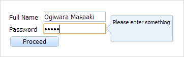
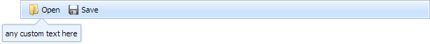

Table of Contents
Initialization
There are 3 ways you can present dhtmlxPopup on the page:
Attaching a popup window to a form control

To attach dhtmlxPopup to a dhtmlxForm object, you should pass the following parameters to the object constructor:
var myForm = new dhtmlXForm("myForm", [ {type: "input", name: "name", value: "Ogiwara Masaaki", label: "Full Name / Nick"}, {type: "password", name: "pwd", value: "12345", label: "Password"}, {type: "button", name: "proceed", value: "Proceed"} ]); var myPop = new dhtmlXPopup({ form: myForm, id: ["name","pwd"] });
| Parameter | Type | Description | Optional/ Mandatory |
|---|---|---|---|
| form | object or string | dhtmlxForm instance | Mandatory |
| id | string or array | the ID of a form item you want to attach dhtmlxPopup to or an array of IDs if you'd like to attach the same popup window to several items. For radio buttons you must specify the value in array (i.e. id: [“inp1”, “inp2”, [“r1”,”v1”] ], where [“r1”,”v1”] is a radio button) | Mandatory |
| mode | “top”, “bottom”, “right”, “left” | specifies the position that the popup window will appear at. The default mode for form-init is “right”. If available space will not be enough, dhtmlxPopup will change mode automatically from “top” to “bottom”, from “left” to “right” and vice versa | Optional |
| skin | string | specifies the skin to apply. Read more on skins here | Optional |
Attaching a popup window to a toolbar control

To attach dhtmlxPopup to a dhtmlxToolbar object, you should pass the following parameters to the object constructor:
var toolbar = new dhtmlXToolbarObject("toolbarObj"); toolbar.addButton("button_open", 2, "Open", "open.gif", "open_dis.gif"); toolbar.addButton("button_save", 3, "Save", "save.gif", "save_dis.gif"); var myPop = new dhtmlXPopup({ toolbar: toolbar, id: "button_open" }); myPop.attachHTML("any custom text here");
| Parameter | Type | Description | Optional/ Mandatory |
|---|---|---|---|
| toolbar | object or string | dhtmxlToolbar instance | Mandatory |
| id | string or array | the ID of a toolbar item you want to attach dhtmlxPopup to or an array of IDs if you'd like to attach the same popup window to several items. | Mandatory |
| mode | “top”, “bottom”, “right”, “left” | specifies the position that the popup window will appear at. The default mode for toolbar-init is “bottom”. If available space will not be enough, dhtmlxPopup will change mode automatically from “top” to “bottom”, from “left” to “right” and vice versa | Optional |
| skin | string | specifies the skin to apply. Read more on skins here | Optional |
Using a popup window standalone (attaching to a custom object)

To initialize dhtmlxPopup standalone you don't need to pass any parameters to the object constructor:
<input type="text" onclick="showPopup(this);" onblur="hidePopup();" value="click"> <script> var myPop = new dhtmlXPopup(); myPop.attachHTML("You can enter some text into here"); function showPopup(inp) { myPop.show(....); // params see in "visibility" section, link below } function hidePopup() { myPop.hide(); } </script>
Get details of how to show/hide dhtmlxPopup in the related chapter - Managing visibility.
| Parameter | Type | Description | Optional/ Mandatory |
|---|---|---|---|
| mode | “top”, “bottom”, “right”, “left” | specifies the position that the popup window will appear at. The default value - “bottom”. If available space will not be enough, dhtmlxPopup will change mode automatically from “top” to “bottom”, from “left” to “right” and vice versa | Optional |
| skin | string | specifies the skin to apply. Read more on skins here | Optional |
Destructor
To remove a dhtmlxPopup instance and clear the memory you should use the unload() method:
myPop.unload(); myPop = null;